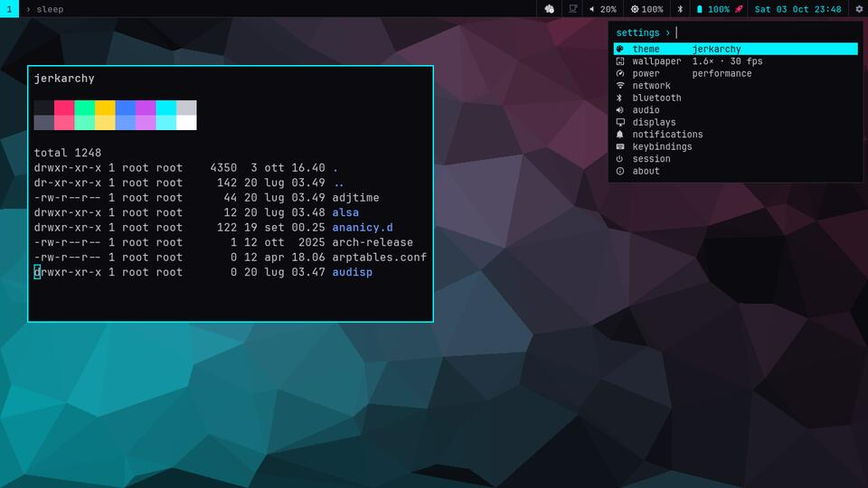
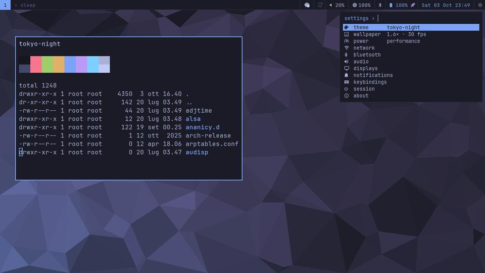
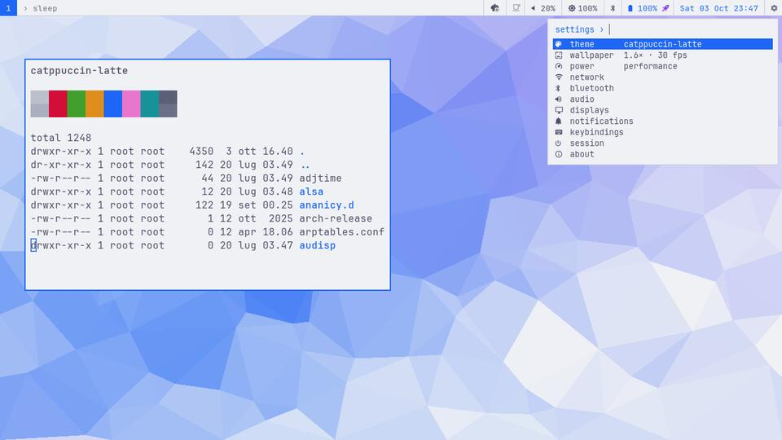
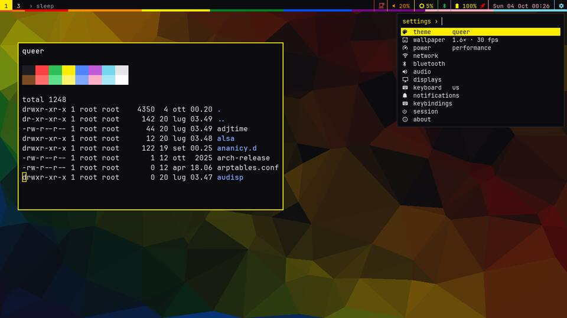
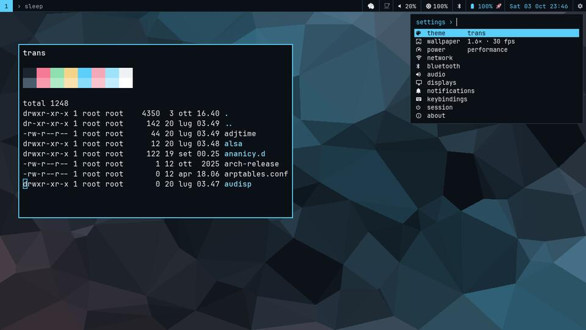
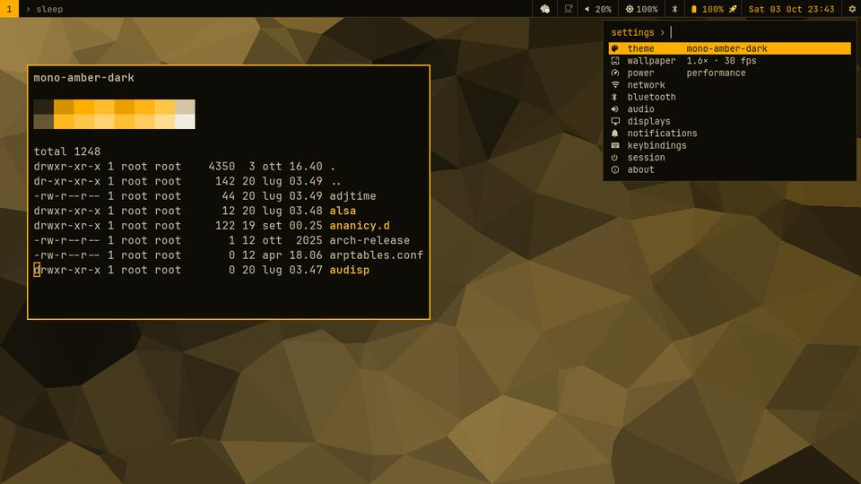

jerkarchy
Twelve men. One distro. Everyone finishes.
Ugly, boring & un-funded Linux.
What it is
An opinionated desktop for Arch-based systems, built on sway and applied with chezmoi. It's a deliberately lazy, obvious rip-off of Omarchy, made to ask one question: what does $15.5 million buy that an evening and a dotfiles manager don't? The figures and the sources behind them are in the README.
Every dependency gets a check against two lists of software run or funded by people the lists' authors consider far-right: ~rabbits/fashware and weird little guys of FOSS.
Install
curl -fsSL https://raw.githubusercontent.com/fulgidus/jerkarchy/main/install.sh | bashRead it first: it's short on purpose. It installs packages from Arch's
official repos (sudo), clones the dotfiles, applies them and builds two small Zig helpers.
Then log into sway and press Super+H for the key bindings.
What's in the box
| window manager | sway + autotiling (Hyprland-style splits) |
|---|---|
| bar | waybar, with Wi-Fi, Bluetooth and settings drop-downs, and battery + power profile in one item |
| wallpaper | a live Delaunay mesh that drifts and shifts colour (Zig, GLES2, CPU fallback) |
| themes | 49: a parody (Matte Billionaire), classics from their upstream projects, flags (queer, bi, trans, polyam, antifa), monochrome |
| settings | one menu (Super+,) and one command, jerkarchy-set |
| screensaver | a big title over the live wallpaper, or terminal art: matrix, bonsai, city, galaxy, planets, three-body orbits |
| workspaces | switches slide (keys and 4-finger swipes); lock and login screens match the desktop |
| notifications | mako; click for actions, copy, dismiss, history |
| key bindings | generated from the config (Super+H), so they can't go stale |
| installer | one bash script, zero questions |
| funding | $0 |
Looks
A few of them below; the gallery has all the themes and screensavers, re-rendered by CI on every release.





